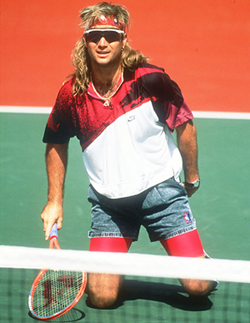
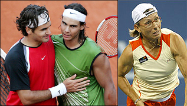
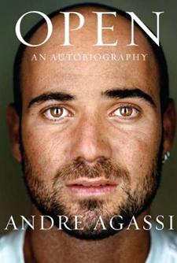
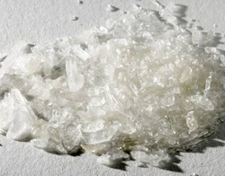
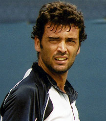

Previous: The Value of Optimism: Your Game | 🏠 Mental Game Home | Next: Thoughts on Cliff Richey's Acing Depression
Thoughts on Andre Agassi
Comprehensive unified tennis knowledge base — Fundamentals, Stroke Analysis, Reference Library, and more
Thoughts on Andre Agassi
By Allen Fox, Ph.D.

What are we to make of Andre's recent revelations about his drug use 10 years ago?
The following is my take on the recent revelations of Andre Agassi in his new book, based on his People Magazine article, his 60 Minutes interview with Katie Couric, and the reactions in the tennis community to these revelations.
I am surprised, even shocked, at the recriminations of Agassi coming from such tennis luminaries as Roger Federer, Rafael Nadal, and Martina Navratilova. I would have thought they would be more understanding and compassionate to a man who has brought such wide and excellent publicity to the sport over so many years--not to mention the increases this has meant to their collective pocketbooks. Instead, Andre's honest revelations, belated though they may be, have brought down a firestorm of criticism on his head.
But let's review Andre's case. Agassi had an over-the-top, driven, and even scary (to a young child) father who forced him to play tennis to the exclusion of education and the other normal accompaniments of childhood. He didn't play tennis because he liked it. He played because he was afraid of his father's reaction if he didn't.
He became, to the exclusion of any hint of normalcy, little more than a semi-robotic tennis machine - obedient to the wishes and expectations of others while repressing any personal desires to be otherwise. After awhile, I'm not sure Andre himself knew who he was or what he really wanted.

Shocking recriminations from champions such as Federer, Nadal, Navratilova.
From his comments it sounds as if he vacillated between mindless rebellion and trying so hard to please that he would do or say anything to meet the expectations of his father and the tennis public. All the while he was feeling guilty about his own fake facade, resentful and hateful about being forced to play a game he didn't like, pressured to win, and depressed over losing matches that he tanked or lost through emotional conflict. No wonder he was confused!
I did not like or respect Agassi throughout most of his early tennis career. It bothered me to see him tank so often and fritter away his physical gifts and talents. It bothered me even more to hear him give interviews afterwards that sounded completely false. He would praise his opponent for having played a "great" match because, it seemed to me, he had read or heard somewhere that this was what a good sportsman should say. It always sounded phony and contrived, like something he thought would make him look good but that didn't have an ounce of reality to it.

The drug revelations are only a small part of the story in Andre's fascinating autobiography.
Later in his career, when he took on Brad Gilbert as a coach in his late 20's, he made a change, and I became more personally positive about him. He started to train, try, and play smarter. He also seemed like a gentle soul and a nice guy, so I started to pull for him and was happy for his successes.
To the public he changed his persona from that of a hip rebel into a kind of wise old elder statesman of tennis - courageous, admirable and charitable - over the hill, but training to an extreme and playing through pain and injury. It was a rather nice story and good for tennis.
Still, I had slight qualms about his public statements. He always said the "right" things, but they were a little too right. There was still a feeling of falseness about them. It still sounded like he was posing as the person he thought he was expected to be rather than the person he actually was. He was now just better at it. And without the tanking issues of his early years, it rang better.
But I could never quite buy it. I suspected that he had been faking it for so long that he didn't know who he really was anyway. His personality felt to me like one of those movie sets where the main street consists merely of house facings, held up behind by slanted 2 by 4's.
Agassi's recent writings and interviews are different. For the first time they have the ring of truth and honesty. For whatever reasons - maybe religion, a happy marriage, maturity, self-analysis, catharsis--whatever - he seems to be willing to toss public expectations aside and tell it like it is, warts and all.
Click Here to hear Andre talk more about the issues around his drug use and why he went public.
Maybe the years of faking it to appear good, making up pretty stories, and trying to be something he wasn't got exhausting. Maybe all his charitable works have finally made him think better of himself, or maybe he has just realized that it's a waste of energy resenting the game that has given him so much and to which he has given so much. In any case, he has been baring his soul, admitting his past dishonesty, and, as far as I can see, has become a more sympathetic person than ever. If he's fooling people, and I don't think he is, then he has certainly fooled me.
Now to the most controversial revelation --the drug thing. He says that for a period of time he was heavily into crystal-meth. His stated reasons were to escape a game and a life he didn't like; to act upon hia rebellious resentment and his own self-loathing.
He resented tennis and his father for forcing him to play it. He said he knew he was hurting himself physically and shortening his career and he was, in a sense, glad of it. This sounds to me as if Andre is being as honest as he can, and it is totally credible. To me it is a sad state of affairs when a person who should be on top of the world is in so much pain that he is happy to hurt himself and/or escape a life he hates and resents through harmful drugs.
Admitting his drug use and previous dishonesty certainly doesn't make him look good. It hardly flatters his image as a great and courageous competitor and philanthropist, and it doesn't increase his commercial value as a spokesperson for products. He loses more financially than he gains, so I don't buy the contention that he came out with all this information damaging to his image just to sell books.

Crystal meth: does this look like a performance enhancing drug?
Moreover and importantly, he used a recreational drug that did not help his tennis - quite the opposite. There is no evidence that he used performance-enhancing drugs like steroids, and his honesty in admitting using crystal-meth does not make it more likely that he did. I feel that if he had been using performance-enhancing drugs and trying to hide it, he would not have brought up his drug use at all.
Some people contend that he looked awfully strong and "may" have used steroids, and they are down on him for that. But there is, to my knowledge, no proof that he has used performance-enhancing drugs. So simply waving the possibility around and further downgrading him on supposition is beyond unfair.
Of course, he "may" have used such drugs. But of course so "may" have Federer, Nadal, or Djokovic. Or why not Rod Laver, Arthur Ashe, or me, for that matter? In fact, Agassi "may" have gone out at night and murdered people. But assertions of "maybes" without proof are obviously very silly.

Sergi Bruguera: Olympic medalist or whiner?
This brings me to the condemnations coming from some of his fellow competitors. What are their gripes? That his drug use helped Agassi beat them? Sergi Bruguera, with a couple of French Championships to his credit, wants Andre to give him the gold medal he won in the 1996 Olympics after beating him in the final. Andre won 6-2, 6-3, 6-1, while hurting himself with crystal-meth. How exactly did his drug use affect the outcome in Bruguera's favor? If Bruguera wanted that gold medal so badly he should simply have beaten Agassi when he had the chance. Now he just sounds like a whiner.
The criticism by Nadal and Federer is even more surprising. At the professional level there is usually a form of brotherhood among players. (There always used to be, anyway.) They don't all love each other when they are on court and trying to beat each other's brains out. But they all go through the same years of tears, sweat, and pain developing their games and working their ways up in the tournament ranks. So only "players" really know what this isolated little life is like. When they are done trying to beat each other there is usually some shared respect, even some small bit of love among them.
This makes some of the criticisms and lack of empathy harder to understand. Was Agassi a bad guy in the day? Did he hurt these guys in ways we don't know? I find it hard to believe.
In any case, Andy Roddick, Justin Gimelstob, and, of course, the ever-loyal Brad Gilbert, have (properly, in my opinion) voiced their support for Andre, and I hope the warm encouragement from his friends and the catharsis of his book finally give this gentle, confused, tortured, but ultimately benevolent guy some of the peace he is seeking.
This article is excerpted from Allen's new book, Tennis: Winning the Mental Match, which will be available at the end of 2010 on Amazon and on Allen's new website, www.allenfoxtennis.net.
Read More From Allen!
Visit him at www.allenfoxtennis.net

Winning the Mental Match Dr. Allen Fox
Tennis is mentally the most difficult sport due to it’s personal nature which makes winning and losing feel more important than they are. In this new book, Allen offers his proven solutions to problems such as choking, reducing stress, finishing matches, and developing confidence. Based on a life time of high level play and coaching success, it’s a must for all competitive players.
Click Here to Order.

Winning may not be everything, but Dr. Allen Fox points out that, if we are honest with ourselves, winning is still eminently preferable to losing. In his new book, The Winner's Mind, Allen lays out an original step-by-step plan for succeeding at any of life's endeavors, based on his first hand and very personal observations of the careers of both world-class tennis players and successful businessman.
The bottom line is that even if you are not a born champion--and only a tiny percentage of us are--you can still use the success strategies of champions to tilt the odds in your favor. Writing with brutal honesty and dry humor, Fox lays out the common mental characteristics of winners in sports and in life. He explains the critical role of intellect over emotion. He analyzes the struggle between ambition and fear and the insidious and pervasive fear of failure that undermines so many of us.
He then outline how to confront and overcome these fears in your life and career, even when they are initially subconscious. Must reading from one of the great thinkers in tennis, and a Renaissance Man in life. Click Here to Order.
To purchase this book you can also send a check for $17.95 to Allen Fox, 1120 Inverness Place, San Luis Obispo, CA. 93401. The price includes shipping.

Allen Fox PhD is a former world class player, a coach, a psychologist, and one of the most original and insightful analysts in modern tennis. A top 10 American player from the glory days before Open tennis, Fox played many of the legendary greats, among them Roy Emerson, Rod Laver, Stan Smith, and Arthur Ashe. At Pepperdine he developed the men's tennis program into an elite contender for national titles, and gave Brad Gilbert the insights that became the foundation for "Winning Ugly". His book Think to Win is a modern classic. He has also starred in a series of acclaimed videos, including Pro Secrets of Match Play and Allen Fox's Ultimate Tennis Lesson.
Source: tennisplayer.net archive — Thoughts on Andre Agassi.docx (John Yandell teaching library, 2002-2022). Extracted and rendered as HTML for Tennis Future Lab.